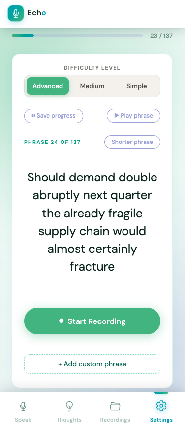
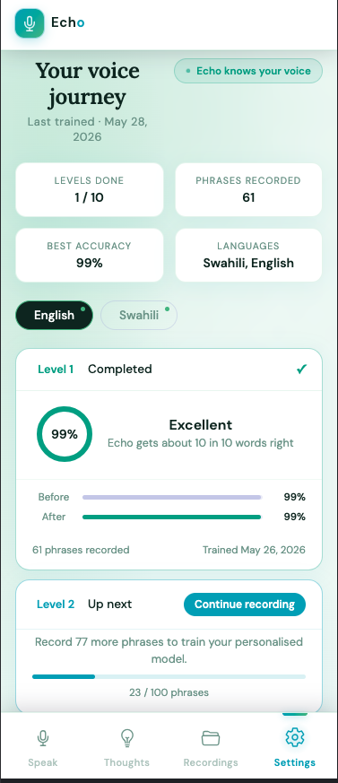

Step 1
Record in your own voice.
A guided recording tool walks you through phrases at your own pace. Switch between Simple, Medium and Advanced levels, or add your own phrases, then record and save them.

Software Engineer and Solutions Architect
Eight years of building, now focused on AI for the voices mainstream technology forgets.
The centerpiece · Echo
Echo is an AI-powered speech infrastructure platform that enables people with non-standard speech to communicate more naturally. It creates personalised speech recognition models that learn an individual’s unique speech patterns, while also supporting underrepresented languages and speech varieties.
Rather than relying on a one-size-fits-all speech recognition model, Echo adapts to each person’s speech, improving recognition accuracy and making communication more accessible and personalised.
The engine
Every person speaks differently, even with the same speech condition. So Echo doesn’t ask one model to understand everyone. Each person contributes samples of their own speech, and Echo builds a personalised adapter on top of a powerful base model such as Whisper.
Step 1
A guided recording tool walks you through phrases at your own pace. Switch between Simple, Medium and Advanced levels, or add your own phrases, then record and save them.

Step 2
Once you’ve recorded, Echo automatically builds your personalised model, ready to use. Your voice journey shows each level you complete, the phrases you’ve recorded, and the languages Echo has learned.

Live captioning is one of the core applications of Echo. It provides real-time captions of a person’s speech across phone calls, video calls, live presentations, meetings, and face-to-face conversations.
By recognising an individual’s personalised speech patterns, Echo converts speech into text in real time, allowing communication partners to follow what is being said without requiring the speaker to repeat themselves or rely on someone else to interpret their speech.
Echo also enables people with non-standard speech to use their own speech to create text and interact with digital devices more naturally.
Users can dictate messages, emails, documents, notes, and other content using personalised speech recognition models that adapt to them rather than requiring them to adapt to conventional voice-recognition systems.
Echo also powers AAC (Augmentative and Alternative Communication) applications, enabling people with speech disabilities to communicate through personalised text and voice.
Together, these applications extend Echo beyond a traditional speech-to-text system into an accessibility infrastructure that can support communication across everyday, professional, educational, and digital environments.
The beginning
In 2017 I walked into Moringa School in Nairobi with no computer-science background, just curiosity. What hooked me wasn't the syntax; it was breaking an overwhelming problem into pieces small enough to solve. Eight years later, that's still why I do this.
How I think
The code was never the hard part. The system around it is: how the pieces talk, where they fail, what happens at scale. I sit with a problem until its structure shows, then design the architecture that makes everything after it feel inevitable. That's why "solutions architect" fits.
Why I build
Software that only impresses other engineers has never moved me. What does is a real person's day getting easier. Every metric I'm proud of is a proxy for that: someone, somewhere, had a better day because the system worked.
Experience
Clinical AI
Consultant
2026–present
Sole architect and engineer of an AI clinical decision-support platform for menopause care, designed and built end to end.
Assistive AI
Product Engineer
2026–present
Lead engineer on Echo (above): the personalized speech engine, and the communication tools now being built on top of it.
Engineering & leadership
Engineer & Technical Coordinator
2018–2025
Grew from engineer into a technical coordinator, mentoring a team while shipping systems used across the whole company.
Platforms at scale
Software Engineer (Remote)
2019–2025
Kept multi-tenant education platforms reliable for thousands of students, fully remote, across complex systems.
Still learning
After eight years of building, I'm studying for a BSc in Mathematics and Computing at The Open University of Kenya: the theory catching up to the practice.
Certification
Amazon Web Services · 2026
Education
The Open University of Kenya · ongoing, 2025 to 2028
Moringa School · 2017